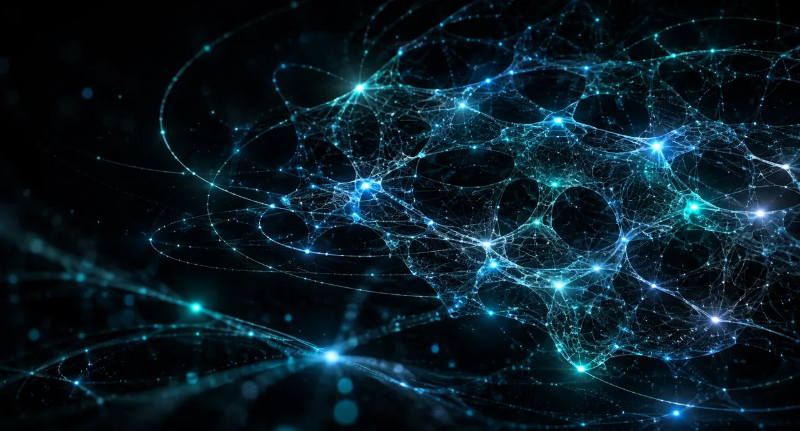

01SENSORES / EVIDÊNCIA
Telemetria tipada
Observações de hardware e sistema preservam unidade, escopo, provedor, tempo de amostragem e proveniência.
Uma nova forma de pensar a computação.
Perceber o ambiente. Preservar a viabilidade.
Desenvolver novas formas de operar.

A Brain Artificial é uma arquitetura computacional experimental que investiga como sistemas especializados podem perceber suas condições, organizar informações, regular recursos e desenvolver formas de operação compatíveis com o ambiente.
Inspirada em princípios de adaptação encontrados na natureza, a proposta trata organização, viabilidade e mudança como problemas centrais de engenharia — não como efeitos automáticos de um único modelo.
Entenda a arquiteturaA proposta não depende de um bloco monolítico. Ela combina mecanismos com responsabilidades específicas, evidências próprias e limites explícitos.
Selecione uma área para conhecer sua responsabilidade e o estado atual de implementação.
Body Awareness e Body Survey organizam observações somente de leitura, mantendo origem, estado e proveniência de cada provedor.
i O diagrama é uma representação visual simplificada. Ele não significa que todos os mecanismos já estejam conectados em um ciclo autônomo integrado.
O BA Core reúne mecanismos experimentais verificáveis. Cada um tem um escopo próprio — e limites que precisam permanecer explícitos.
Observações de hardware e sistema preservam unidade, escopo, provedor, tempo de amostragem e proveniência.
Identidades e relações são organizadas com resolução determinística e diagnóstico de conflitos, sem inventar conexões ausentes.
Mecanismos locais e determinísticos regulam variáveis e alvos diante de incompatibilidades persistentes, com limites e reservas explícitos.
Campos e sinais espaciais modelam produção, transporte, captação e degradação, preservando a separação entre esses processos.
Orçamentos consultivos usam evidências qualificadas. As políticas são informativas: não aplicam cotas nem controlam o agendador do sistema.
Ciclos temporais, recuperação, gestão ampliada de recursos e evolução estrutural seguem em desenvolvimento e validação.
O objetivo de longo prazo é estruturar um processo no qual o sistema observe condições, forme contexto, regule sua operação e avalie os efeitos das mudanças.
Estado atual: os mecanismos que inspiram estas etapas existem em graus diferentes de maturidade. A sequência abaixo representa uma direção arquitetural, não um ciclo autônomo completo já demonstrado.
A BA está sendo construída por etapas. Uma funcionalidade só é considerada consolidada quando código, testes e evidências sustentam essa conclusão.
Acompanhar o desenvolvimentoComponentes do BA Core, como topologia, telemetria, sinais, homeostase e alostase.
Ciclos temporais, evidências cruzadas, checkpoints, inventário e mecanismos de suporte.
Plasticidade estrutural, desenvolvimento, evolução e especialização adaptativa mais ampla.
Uma proposta nova exige distinções claras entre objetivo, implementação e hipótese.
Não é essa a definição do projeto. A BA é concebida como uma arquitetura computacional adaptativa, composta por mecanismos especializados. Modelos de IA podem ser utilizados como ferramentas ou especialistas substituíveis, mas não definem a identidade da arquitetura.
Existem mecanismos experimentais de regulação local, adaptação de alvos e modelagem ambiental no BA Core. Isso não equivale a um ciclo global, contínuo e autônomo plenamente integrado. Essa integração segue em desenvolvimento.
Não. A base atual prioriza observação de leitura e aconselhamento. Controle de dispositivos, firmware, drivers ou recursos do sistema exige interfaces específicas, compatibilidade, autorização e validação. Não existe suporte universal nem alteração direta do silício.
Não como produto completo. O projeto está em pesquisa e desenvolvimento. Existem componentes e protótipos utilizáveis em contextos delimitados, mas a arquitetura integral ainda não está consolidada como uma instalação universal.
É uma direção de pesquisa que inclui mudanças organizacionais e estruturais ao longo do tempo. Adaptação operacional, plasticidade de componentes e evolução hereditária são problemas diferentes e não devem ser tratados como se já estivessem implementados.
Acompanhe a pesquisa, consulte o código e participe da evolução do projeto.